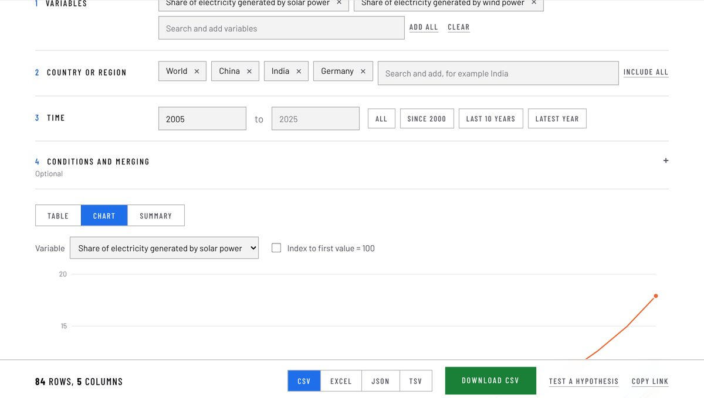
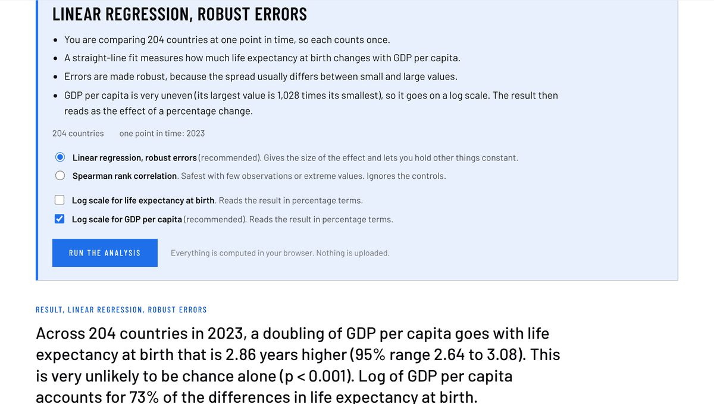
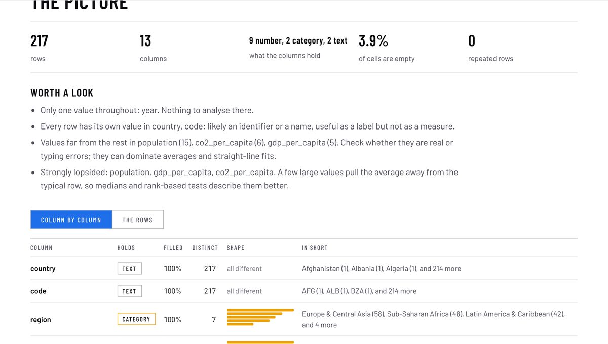

The world's open data
Ask for a number and get it with its year and its source. Or take a whole dataset, shape it and download it. No scraping, no cleaning, no sign-up.
Four ways to use it
Start with the one that matches what you came for. The guide walks through each of them with examples.

Ask for a number
Type what you want to know. You get the value, its year, its source, a chart and a citation you can paste.
Ask a question
Take a dataset
Choose the variables, places and years. Check the table and the chart. Download CSV, Excel or JSON.
Browse the datasets
Test an idea
State a hypothesis. Get the right test with the reasons for it, then the result in plain words with charts.
Open Researcher mode
Analyse your own file
Open a CSV, Excel, JSON, Parquet, SPSS or Stata file. It is read in your browser and never uploaded.
Open a fileDatasets
Take a whole dataset in one click, or customize it first. See every variable in one list.
The world at a glance
The latest year with wide coverage, country by country. Hover for the number, click a country to open its data.

The world this year
Running estimates. Each one takes the latest full-year figure and spreads it evenly across the year.
The world in six charts
Drawn from the datasets above. Pick one, or let them play.
Kept fresh
Every source is checked once a day, and each check records exactly what changed. Earthquakes on the globe above come straight from the US Geological Survey, minute by minute.